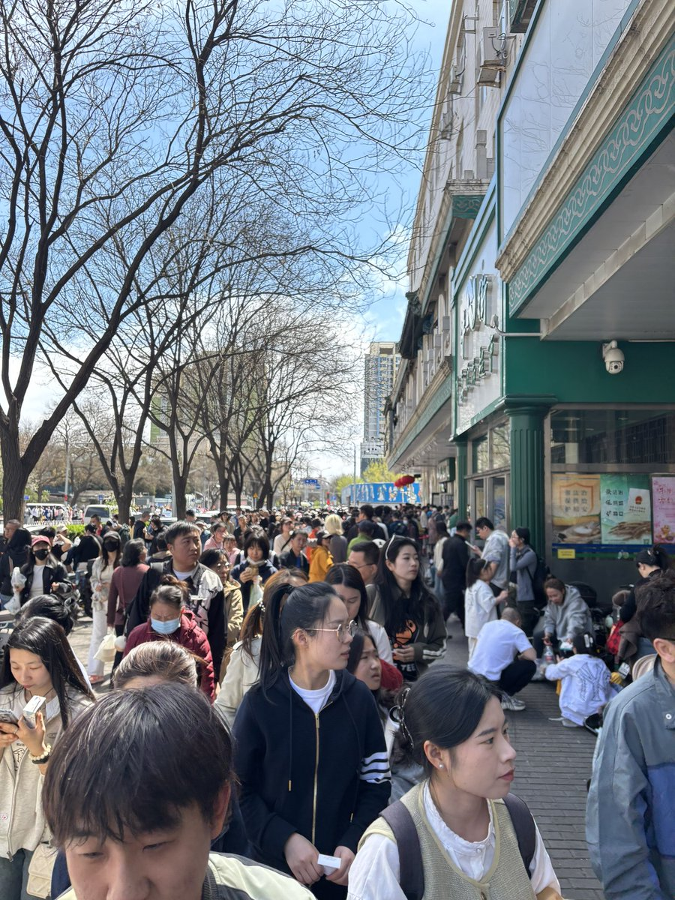
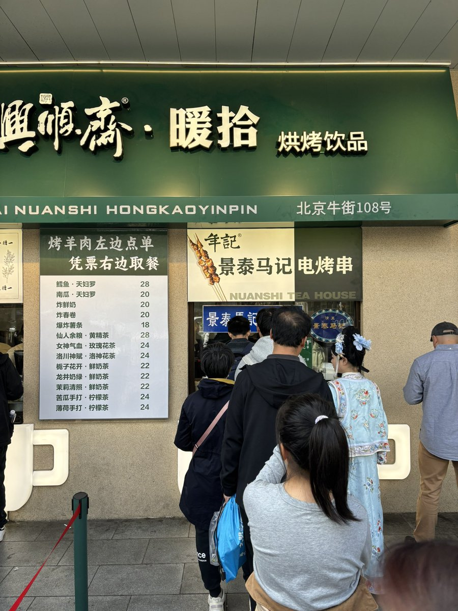
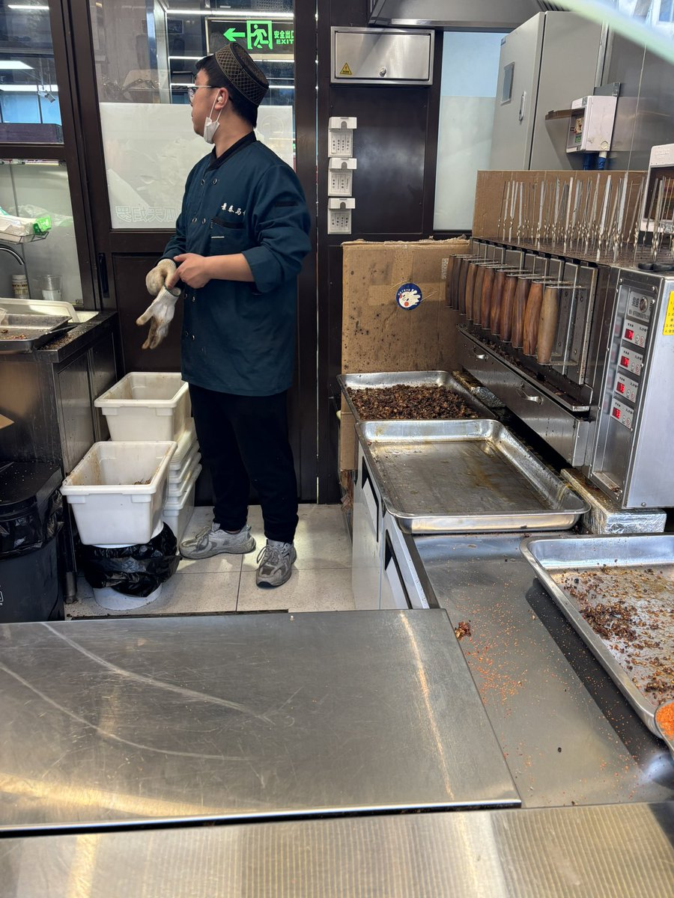
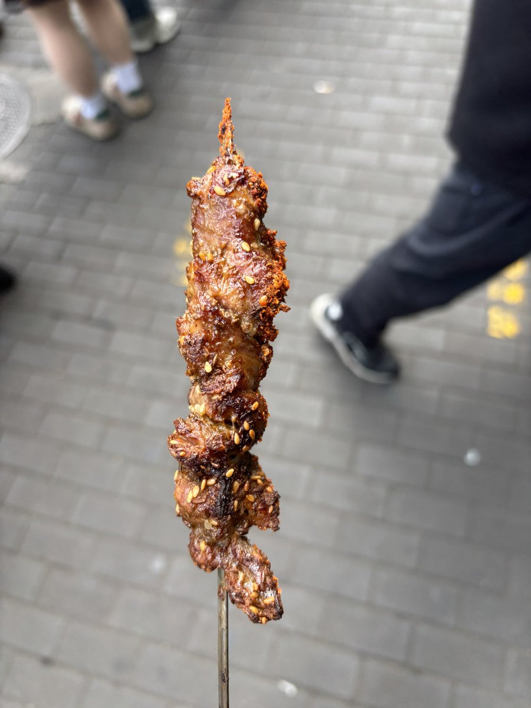

@luoyuha9 这已经很实惠了





去了牛街
其他都没排上队
就点了一串都说知名的羊肉串
10块钱一串🥲确实是真羊肉
但是仅此而已没有很惊艳的感觉
可能曾经真的很好吃吧
Went to Niujie in Beijing. There was no queue for other things. So I ordered a famous lamb skewer. It was 10 Y a skewer. It was real lamb. But that was it https://t.co/jJUJyrRjSx
其他都没排上队
就点了一串都说知名的羊肉串
10块钱一串🥲确实是真羊肉
但是仅此而已没有很惊艳的感觉
可能曾经真的很好吃吧
Went to Niujie in Beijing. There was no queue for other things. So I ordered a famous lamb skewer. It was 10 Y a skewer. It was real lamb. But that was it https://t.co/jJUJyrRjSx